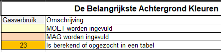
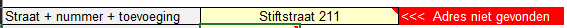
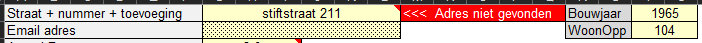
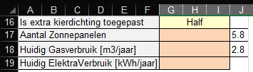

Exacte straatnaam gevolgd door een spatie en dan het nummer. Als er een toevoeging aan het nummer is, deze vastplakken aan het nummer, dus bijv: "straat 6a". De straatnaam is niet hoofdletter gevoelig. Alle adressen binnen onze gemeente zitten in de ingebouwde database, die rechtstreeks is afgeleid uit het BAG register.
Als het adres niet bestaat, krijg je een duidelijke waarschuwing:

Correcte Voorbeelden:
De Bongerd 33
de bongerd 33
Appelhof 6a
Mocht je het verbruik voor een kennis buiten onze gemeente willen berekenen, dan kun je door het invullen van het juiste bouwjaar en woonoppervlakte de berekening alsnog laten maken:

In de sectie "Tabs Speciaal" is te vinden hoe je het BAG register voor een andere gemeente importeert,
Dit veld is niet verplicht en is bedoeld om een pdf rapport naar de bewoners te kunnen sturen.
Mensen produceren warmte en deze hoeveelheid hoef je dus niet extra toe te voegen. Daarnaast wordt dit gegeven gebruikt om de energie voor warm water in te schatten.
U heeft momenteel de keuze uit Hoekwoning / Tussenwoning / Vrijstaand / Bungalow / Semi-Bungalow. Een twee-onder-een-kapper staat energetisch gelijk aan een hoekwoning.
Semi-bungalow = GebruiksOppervlakte wordt voor 2/3 op de begane grond gesitueerd
Bungalow = GebruiksOppervlakte wordt geheel verdeeld over de begane grond
Keuze uit weinig / normaal / veel. Als u twijfelt, vul dan normaal in.
Als we het de bewoner van te voren zelf laten invullen is het misschien verstandig gewoon naar glasoppervlakte beneden en glasoppervlakte boven te vragen.
Wordt nu nog niet gebruikt.
Als er vloerverwarming is, dan is het warmteverlies een stuk groter dan zonder vloerverwarming. In dat geval wordt ook een veel hogere isolatiewaarde van de vloer geadviseerd.
Geen: er is geen geforceerde afzuiging, ventilatie gebeurt door dauerlufters of gewoon door het raam open te zetten
Centrale afzuiging : er is een centrale afzuiging (meestal 3 standen), die keuken, wc en badkamer afzuigt, in combinatie met kieren van ongeveer 2 cm onder alle deuren.
Gestuurde ventilatie : er is geforceerde afzuiging die CO2 gestuurd is
Gestuurd met WTW : gestuurde afzuiging (CO2 en/of vochtigheid) en er is een Warmte-Terug-Win systeem
Mogelijkheden zijn : nee / half / ja
Als de gehele bovenverdieping op dezelfde temperatuur wordt gehouden als de begane grond, dan is het antwoord "ja".
Als er op de bovenverdieping niet of nauwelijks wordt gestookt is het antwoord "nee".
Als er op de bovenverdieping beperkt wordt verwarmd en/of op een lagere temperatuur wordt gestookt is het antwoord "half", in dat geval wordt de temperatuur boven gelijk gemaakt aan de beneden-temperatuur min 3 graden. Middels detaillering kun je iedere gewenste temperatuur op de bovenverdieping instellen.
Mogelijkheden nee / half / ja.
Nee: als er na de bouw niets extra is gedaan
Ja: als na de bouw tot minimaal de huidige norm is geïsoleerd (Rc=3.5 zonder vloerverwarming, Rc=5 in geval van vloerverwarming.
Half: in de overige gevallen, dus als er een beetje is bijgeïsoleerd
Hier wordt bedoeld of de spouw is bij-geïsoleerd. Standaard wordt er van uitgegaan dat als een spouw leeg is, er 5 cm isolatie in kan en als er al spouw isolatie aanwezig is, dat er slechts 2 cm bij-geïsoleerd kan worden, wat een schamele 0.4 toevoegt.
Als de spouw breder is dan hierboven genoemd, of als men isolatie aan binnenkant of buitenkant van de muur wil aanbrengen, dan moet men zelf de detaillering nauwkeuriger invullen.
Mogelijkheden nee / half / ja.
Als het dak echt is bij-geïsoleerd tot de huidige norm, dan is het antwoord "ja".
Als het meer dan 10 jaar geleden is bij-geïsoleerd of als je nog steeds de balken kunt zien is het antwoord "half"
Nee: als het glas niet is vervangen door beter glas
Ja: als het glas is verbeterd tot HR+++ (Ug\<0.8)
Half: in overige gevallen
Het glas is voor het model een moeilijk te bepalen parameter. Dit komt omdat de eisen voor een minimale isolatiewaarde van het glas nooit zijn vastgelegd in het bouwbesluit. Het model moet dus behoorlijk gissen naar de aanwezige glassoort. Omdat de isolatiewaarden van het glas vaak aangepast moeten worden en we willen voorkomen dat je naar het tabblad "Details" moet gaan, kun je in cel J17 en J18 de (gemiddelde) Ug-waarden van het glas boven (J17) en beneden (J18) opgeven.
| Hier is dus aangegeven Boven (J17): Ug = 5.8 (enkel glas) Beneden (J18): Ug = 2.8 (oud dubbel glas) HR++ : Ug = 1.0 HR+++ : Ug = 0.7 Beng Glas: Ug = 0.5 |
 |
|---|---|
Nee: bewoner geeft aan dat er behoorlijk wat wind her en der het huis binnenkomt.
Ja: als de kierdichting fundamenteel is aangepakt en liefst bevestigd door een blowerdoor test.
Half: voor woningen van voor 1990, waarbij de bewoners niet klagen over tocht is dit het juiste antwoord
Dit veld is niet verplicht en is bedoeld voor toekomstig gebruik (aantal zonnepanelen voor warmtepomp, bijdrage van zonnepanelen aan energielabel)
Dit veld is niet verplicht en is bedoeld om te bekijken in hoeverre het berekende gasverbruik overeen komt met het werkelijk gasverbruik. Daarnaast wordt het gasverbruik gebruikt om de benodigde capaciteit van een WarmtePomp te berekenen.
Dit veld is niet verplicht en voor toekomstig gebruik.